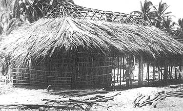

Have you ever had the chance to live your Utopian vision? Not just daydream it . . . or blueprint it . . . or curse its evasiveness . . . but live it? For a couple of years, our commune of four-plus had that chance. It took us a while to realize it, but-during those years-we were truly in the pastures of Paradise.
We were, praise God, outside the U.S.A. and temporarily out of range of the bombardment of this culture: the news, the phones, the blues, the vibrations. That automatically gave our Utopia a head start.
There's a 100-mile stretch of virgin seashore on Mexico's west coast between Acapulco and its commercial cousin up the beach, Zihuatanejo. There, in tiny fishing villages, men still farm and fish in the eighteenth century way with homemade tools just like the ones already on display in the Indian lore section of Mexico City's fancy Anthropology Museum.
We were on that Pacific coast, 30 miles north of Acapulco . . . where there are still lagoons. Sleepy, tropical lagoons like you see in old Esther Williams movies. There, the sun shines all the time and the air blows in fresh and pure off the sea. It's a picture postcard world where the sounds are all natural and the land urges you to live close to it.
We were slow to get the idea. We didn't even begin to catch on until our Mexican neighbors took us by the hand and showed us what was growing in our "weedpatch". The immense weed was watermelon and the little one was verdolaga, a nourishing and tasty wild green. The revelation penetrated our concrete, city-reared minds and-somewhat in the manner of Og and Charley discovering fire-we said, "Hey! Let's plant a garden."
The peninsula where we'd settled was pure beach sand so-since we'd heard that plants need soil-we carted in tons of rich, jungle-y dirt from the banks of a nearby lagoon (we hired a homemade oxcart for $2.00 a day). The soil was rich in clay and drained well when mixed with two or three parts of sand and we fertilized it with sun-dried cow manure that we collected from the miles of surrounding fields.
"What's a nice Jewish boy like me doing in a place like this?" I wondered. "Organic gardening," they told me. "OK," I said, and plunged my shovel in again.
For several days we fried our bodies as we carpeted the yard with fertile soil. Then we collected, dried and planted seeds from the produce we bought at the local market. We cleverly wrote away for "professional" seeds and planted them too. The results were astounding.
Except for certain cold-weather crops, everything we planted sprang out of the earth and into our bellies in record time: corn, radishes, Swiss chard, mustard greens, collards, eggplants, broccoli, tomatoes, peppers, beets, sunflowers (mammoth), watermelons, cucumbers, lima beans, string beans, papayas . . . and many pretty flowers.
If you plant in June on the Pacific coast of Mexico, 30 miles north of Acapulco, nature will do all the rest. There, it rains once daily from June to September: the sun shines for most of the day, gathering clouds shade the tendrils in the late afternoon and the God-ener waters at eight. Pull up the spider grass every now and then and you're home free.
If you plant during the dry season, you'll need a well . . . and, if you're lazy, a pump. But the water table near the shore is only ten feet down and easy to dig to and the supply of underground water is absolutely limitless. The water, sun and abundant good soil made our garden grow . . . even as ignorant as we were.
Our house was on the outskirts of a small coastal village. In the beginning, when we wanted fish, we rowed out to the fishermen's boats and bargained for a dozen mullet that were still flopping around the bottom of a boat. The mullet cost 15 to 20 cents a dozen, 25 to 50 cents bought 12 shrimp and a dozen freshwater crabs were 10 to 15 cents. Catfish were free. Cheap enough . . . but we only bought fish during the month it took us to learn to catch our own.
The natives on that gentle coast fish with large, umbrella-shaped cast nets which they weave themselves. Nearly every toss of the net yields a fish . . . more often, several.
I watched in awe as, draped in folds of netting, the fishermen balanced precariously on the bow boards of their tiny rowboats and gracefully uncoiled to hurl 30-foot circles of nylon onto the clear water. The circumference of each circle is strung with hand-molded strips of lead that weigh a total of about 30 pounds. The leads sink quickly to the bottom, trapping the fish swimming in the circle described by the throw . . . then, gently, the leads are drawn together from above by a drawstring attached to the fisherman's wrist. The process is a delicate one: too much upward jerking and the leads rise off bottom, freeing the catch.
Every day I watched the fishermen. From the shore, it was like a water ballet. Eight or ten boats slipped over the glassy surface of the lagoon while dawn washed -the scene with red, gold and-finally-shining clear light. Dark bodies spun and gleaming nets whistled and unfurled. I had to learn to throw the tarralla. Bali-Hai was calling.
I'd become friendly enough with the fishermen to ask for a lesson, and soon I became the protege of a teenage boy. He started me throwing from the shore. For him, it was easy. Nobody teaches anybody here, he told me. You just do it. Your father does it, your brother does it . . . so when you're big enough, you do it. Here, watch me. See? Just do it.
The net seemed to me to be made of about a thousand yards of material. Even doubled, it was 15 feet long and impossible to manage. My guru laughed at me as I fumbled.
All the fishermen laughed at me. Even later, when I had become somewhat competent, they were hysterical every time I fished. I think my attempts to do their thing endeared me to them. "Look at the gringo!" they'd shriek as I heaved the net overboard. From my point of view, I was MAN HUNTING FOR HIS FAMILY . . . from their vantage point, I wasan aquatic Charlie Chaplin.
Whatever the overlay, the reality was that two hours of daily tarralla throwing in the lagoon kept us in free fresh fish (even when we had ten others living with us). The nets were easy to weave and we bought enough material for $10 to make a big net (good for shrimp, mullet, snook and catfish) with plenty left over for a few small crabnets.
OK. For an investment of under $15, we had a subsistence garden and all the fish we could eat. In spite of overwhelming ignorance, we were living off the land. Water was free and plentiful from the well or from the fast-flowing rivers that fed the lagoon. We stocked up on rice in the marketplace and our diet was completely natural and completely balanced.
Materials for housing are free and abundant along Mexico's west coast. The fishermen's homes are all made of dried palapa, the sturdy leaf of the coconut palm. Logs and sticks from trees around the lagoon are used for a house frame and palapas do the rest. Each leaf has a hardwood spine-perfect for crosspieces-and the leaves themselves are woven onto the frame and crosspieces to make the walls and roof. For the elegant, concrete can be poured over the sandy floor.
The palapa but has been traditional housing in tropical Mexico for centuries and two men can build a 50-footsquare, totally rain-proof house of palapa in less than two weeks. Aside from low cost and speed of erection, the palapa hut's main advantage over concrete is its ability to stay cool at midday and to remain flexible when high seas and frequent earthquakes are cracking concrete walls. It also gives even unskilled pioneers a crack at the feeling of self sufficiency that arises from providing cozy shelter out of local materials.
Building a home and planting a garden in the Paradise we discovered will require a substantial investment of energy at the outset . . . but your Utopia will more or less run itself thereafter. The dues are cheap. Daily attention to the garden and a healthful tour or two of paddling the idyllic lagoon with your net will leave you many moments to tune into where you are in any manner you choose.
There are crafts to learn and practice on that Pacific coast: hammock-making (a useful cottage industry), survival skills (the natives are a graduate course), weaving (lots of Indians in the villages). There's a culture to grok. A language to learn. And, perhaps most importantly, there's a pristine seashore to run on and explore (and to restore you). Clearwater waves rise out of the ocean like laboratory slides, flashing bright pictures of the life within. It's like a glimpse of what the struggle for a decent environment is working toward.
Admission to this Utopia is easy. Mexico welcomes you free for six months at a time; exit and re-entry twice a year is pro-forma but unavoidable. As with all foreign travel, some knowledge of the language and respect for the culture will largely determine the quality of your reception by the people.
Getting it together their way was a splendid personal bridge between our family and the townspeople. When you're laughed at for handling the machete like a klutz, accept it. You probably are a klutz . . . and being one will help offset the Great White Hunter image that rural Mexicans will have of you when you arrive.
Consider cutting your hair. The fishing villages are police and federale-free, but the marijuana capital of the Western World is in the mountains beyond the lagoon, and U.S. sponsored anti-hippie propoganda is intense in that area.
Be careful about nudity. Sexual mores are as primitive as the technology, and outraged fishermen are not above vigilante raids. There's land enough to live however you please in complete privacy, and there's no percentage in blowing villagers' minds. Communes are run out of Mexico more for nudity than for any other offense.
Meeting the locals more than halfway is worth it. For a minimum of caution, trouble and cost, you'll get an opportunity to live a truly natural life . . . to synch up with the sun and moon and sea . . . to clean out your body, and to let yourself flow with nature. From Zihuantanejo south to Pie de la Cuesta are dozens of virtually unknown villages sandwiched between the Pacific and five lagoons. Most of the villages are still accessible only by water . . . but a new coastal highway-already in the works-will soon change all that.
If you have six months, little money but a desire to get close to the land at least once before all the good places are gone . . . give Paradise a try.
|
 |
|
|